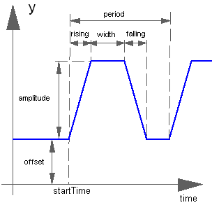
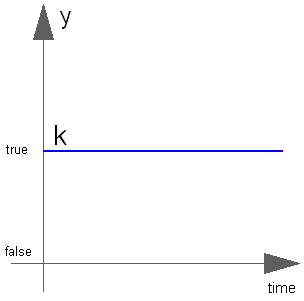

This package contains source components, i.e., blocks which have only output signals. These blocks are used as signal generators for Real, Integer and Boolean signals.
All Real source signals (with the exception of the Constant source) have at least the following two parameters:
| offset | Value which is added to the signal |
| startTime | Start time of signal. For time < startTime, the output y is set to offset. |
The offset parameter is especially useful in order to shift the corresponding source, such that at initial time the system is stationary. To determine the corresponding value of offset, usually requires a trimming calculation.
Extends from Modelica.Icons.SourcesPackage (Icon for packages containing sources).
| Name | Description |
|---|---|
BooleanConstant | Generate constant signal of type Boolean |
BooleanExpression | Set output signal to a time varying Boolean expression |
BooleanPulse | Generate pulse signal of type Boolean |
BooleanStep | Generate step signal of type Boolean |
BooleanTable | Generate a Boolean output signal based on a vector of time instants |
Clock | Generate actual time signal |
CombiTimeTable | Table look-up with respect to time and linear/periodic extrapolation methods (data from matrix/file) |
Constant | Generate constant signal of type Real |
Cosine | Generate cosine signal |
Exponentials | Generate a rising and falling exponential signal |
ExpSine | Generate exponentially damped sine signal |
IntegerConstant | Generate constant signal of type Integer |
IntegerExpression | Set output signal to a time varying Integer expression |
IntegerStep | Generate step signal of type Integer |
IntegerTable | Generate an Integer output signal based on a table matrix with [time, yi] values |
KinematicPTP | Move as fast as possible along a distance within given kinematic constraints |
KinematicPTP2 | Move as fast as possible from start to end position within given kinematic constraints with output signals q, qd=der(q), qdd=der(qd) |
Pulse | Generate pulse signal of type Real |
RadioButtonSource | Boolean signal source that mimics a radio button |
Ramp | Generate ramp signal |
RealExpression | Set output signal to a time varying Real expression |
SampleTrigger | Generate sample trigger signal |
SawTooth | Generate saw tooth signal |
Sine | Generate sine signal |
Step | Generate step signal of type Real |
TimeTable | Generate a (possibly discontinuous) signal by linear interpolation in a table |
Trapezoid | Generate trapezoidal signal of type Real |
The (time varying) Real output signal of this block can be defined in its parameter menu via variable y. The purpose is to support the easy definition of Real expressions in a block diagram. For example, in the y-menu the definition "if time < 1 then 0 else 1" can be given in order to define that the output signal is one, if time ≥ 1 and otherwise it is zero. Note, that "time" is a built-in variable that is always accessible and represents the "model time" and that variable y is both a variable and a connector.
| Type | Name | Description |
|---|---|---|
output RealOutput | y | Value of Real output |
The (time varying) Integer output signal of this block can be defined in its parameter menu via variable y. The purpose is to support the easy definition of Integer expressions in a block diagram. For example, in the y-menu the definition "if time < 1 then 0 else 1" can be given in order to define that the output signal is one, if time ≥ 1 and otherwise it is zero. Note, that "time" is a built-in variable that is always accessible and represents the "model time" and that variable y is both a variable and a connector.
| Type | Name | Description |
|---|---|---|
output IntegerOutput | y | Value of Integer output |
The (time varying) Boolean output signal of this block can be defined in its parameter menu via variable y. The purpose is to support the easy definition of Boolean expressions in a block diagram. For example, in the y-menu the definition "time >= 1 and time <= 2" can be given in order to define that the output signal is true in the time interval 1 ≤ time ≤ 2 and otherwise it is false. Note, that "time" is a built-in variable that is always accessible and represents the "model time" and that variable y is both a variable and a connector.
| Type | Name | Description |
|---|---|---|
output BooleanOutput | y | Value of Boolean output |
The Real output y is a clock signal:
Extends from Modelica.Blocks.Interfaces.SignalSource (Base class for continuous signal source).
| Type | Name | Default | Description |
|---|---|---|---|
Real | offset | 0 | Offset of output signal y |
Time | startTime | 0 | Output y = offset for time < startTime |
| Type | Name | Description |
|---|---|---|
output RealOutput | y | Connector of Real output signal |
The Real output y is a constant signal:

Extends from Modelica.Blocks.Interfaces.SO (Single Output continuous control block).
| Type | Name | Default | Description |
|---|---|---|---|
Real | k | Constant output value |
| Type | Name | Description |
|---|---|---|
output RealOutput | y | Connector of Real output signal |
The Real output y is a step signal:

Extends from Modelica.Blocks.Interfaces.SignalSource (Base class for continuous signal source).
| Type | Name | Default | Description |
|---|---|---|---|
Real | height | 1 | Height of step |
Real | offset | 0 | Offset of output signal y |
Time | startTime | 0 | Output y = offset for time < startTime |
| Type | Name | Description |
|---|---|---|
output RealOutput | y | Connector of Real output signal |
The Real output y is a ramp signal:

If parameter duration is set to 0.0, the limiting case of a Step signal is achieved.
Extends from Modelica.Blocks.Interfaces.SignalSource (Base class for continuous signal source).
| Type | Name | Default | Description |
|---|---|---|---|
Real | height | 1 | Height of ramps |
Time | duration | Duration of ramp (= 0.0 gives a Step) | |
Real | offset | 0 | Offset of output signal y |
Time | startTime | 0 | Output y = offset for time < startTime |
| Type | Name | Description |
|---|---|---|
output RealOutput | y | Connector of Real output signal |
The Real output y is a sine signal:

Extends from Modelica.Blocks.Interfaces.SignalSource (Base class for continuous signal source).
| Type | Name | Default | Description |
|---|---|---|---|
Real | amplitude | 1 | Amplitude of sine wave |
Frequency | freqHz | Frequency of sine wave | |
Angle | phase | 0 | Phase of sine wave |
Real | offset | 0 | Offset of output signal y |
Time | startTime | 0 | Output y = offset for time < startTime |
| Type | Name | Description |
|---|---|---|
output RealOutput | y | Connector of Real output signal |
The Real output y is a cosine signal:

Extends from Modelica.Blocks.Interfaces.SignalSource (Base class for continuous signal source).
| Type | Name | Default | Description |
|---|---|---|---|
Real | amplitude | 1 | Amplitude of cosine wave |
Frequency | freqHz | Frequency of cosine wave | |
Angle | phase | 0 | Phase of cosine wave |
Real | offset | 0 | Offset of output signal y |
Time | startTime | 0 | Output y = offset for time < startTime |
| Type | Name | Description |
|---|---|---|
output RealOutput | y | Connector of Real output signal |
The Real output y is a sine signal with exponentially changing amplitude:

Extends from Modelica.Blocks.Interfaces.SignalSource (Base class for continuous signal source).
| Type | Name | Default | Description |
|---|---|---|---|
Real | amplitude | 1 | Amplitude of sine wave |
Frequency | freqHz | Frequency of sine wave | |
Angle | phase | 0 | Phase of sine wave |
Damping | damping | Damping coefficient of sine wave | |
Real | offset | 0 | Offset of output signal y |
Time | startTime | 0 | Output y = offset for time < startTime |
| Type | Name | Description |
|---|---|---|
output RealOutput | y | Connector of Real output signal |
The Real output y is a rising exponential followed by a falling exponential signal:

Extends from Modelica.Blocks.Interfaces.SignalSource (Base class for continuous signal source).
| Type | Name | Default | Description |
|---|---|---|---|
Real | outMax | 1 | Height of output for infinite riseTime |
Time | riseTime | Rise time | |
Time | riseTimeConst | 0.1 | Rise time constant; rising is defined as outMax*(1-exp(-riseTime/riseTimeConst)) |
Time | fallTimeConst | riseTimeConst | Fall time constant |
Real | offset | 0 | Offset of output signal y |
Time | startTime | 0 | Output y = offset for time < startTime |
| Type | Name | Description |
|---|---|---|
output RealOutput | y | Connector of Real output signal |
The Real output y is a pulse signal:

Extends from Modelica.Blocks.Interfaces.SignalSource (Base class for continuous signal source).
| Type | Name | Default | Description |
|---|---|---|---|
Real | amplitude | 1 | Amplitude of pulse |
Real | width | 50 | Width of pulse in % of period |
Time | period | Time for one period | |
Integer | nperiod | -1 | Number of periods (< 0 means infinite number of periods) |
Real | offset | 0 | Offset of output signal y |
Time | startTime | 0 | Output y = offset for time < startTime |
| Type | Name | Description |
|---|---|---|
output RealOutput | y | Connector of Real output signal |
The Real output y is a saw tooth signal:

Extends from Modelica.Blocks.Interfaces.SignalSource (Base class for continuous signal source).
| Type | Name | Default | Description |
|---|---|---|---|
Real | amplitude | 1 | Amplitude of saw tooth |
Time | period | Time for one period | |
Integer | nperiod | -1 | Number of periods (< 0 means infinite number of periods) |
Real | offset | 0 | Offset of output signal y |
Time | startTime | 0 | Output y = offset for time < startTime |
| Type | Name | Description |
|---|---|---|
output RealOutput | y | Connector of Real output signal |
The Real output y is a trapezoid signal:

Extends from Modelica.Blocks.Interfaces.SignalSource (Base class for continuous signal source).
| Type | Name | Default | Description |
|---|---|---|---|
Real | amplitude | 1 | Amplitude of trapezoid |
Time | rising | 0 | Rising duration of trapezoid |
Time | width | 0.5 | Width duration of trapezoid |
Time | falling | 0 | Falling duration of trapezoid |
Time | period | Time for one period | |
Integer | nperiod | -1 | Number of periods (< 0 means infinite number of periods) |
Real | offset | 0 | Offset of output signal y |
Time | startTime | 0 | Output y = offset for time < startTime |
| Type | Name | Description |
|---|---|---|
output RealOutput | y | Connector of Real output signal |
The goal is to move as fast as possible along a distance deltaq under given kinematical constraints. The distance can be a positional or angular range. In robotics such a movement is called PTP (Point-To-Point). This source block generates the acceleration qdd of this signal as output:

After integrating the output two times, the position q is obtained. The signal is constructed in such a way that it is not possible to move faster, given the maximally allowed velocity qd_max and the maximally allowed acceleration qdd_max.
If several distances are given (vector deltaq has more than 1 element), an acceleration output vector is constructed such that all signals are in the same periods in the acceleration, constant velocity and deceleration phase. This means that only one of the signals is at its limits whereas the others are synchronized in such a way that the end point is reached at the same time instant.
This element is useful to generate a reference signal for a controller which controls a drive train or in combination with model Modelica.Mechanics.Rotational.Accelerate to drive a flange according to a given acceleration.
Extends from Modelica.Blocks.Interfaces.MO (Multiple Output continuous control block).
| Type | Name | Default | Description |
|---|---|---|---|
Real | deltaq[:] | {1} | Distance to move |
Real | qd_max[:] | {1} | Maximum velocities der(q) |
Real | qdd_max[:] | {1} | Maximum accelerations der(qd) |
Time | startTime | 0 | Time instant at which movement starts |
final Integer | nout | max([size(deltaq, 1); size(qd_max, 1); size(qdd_max, 1)]) | Number of outputs |
| Type | Name | Description |
|---|---|---|
output RealOutput | y[nout] | Connector of Real output signals |
The goal is to move as fast as possible from start position q_begin to end position q_end under given kinematical constraints. The positions can be translational or rotational definitions (i.e., q_begin/q_end is given). In robotics such a movement is called PTP (Point-To-Point). This source block generates the position q(t), the speed qd(t) = der(q), and the acceleration qdd = der(qd) as output. The signals are constructed in such a way that it is not possible to move faster, given the maximally allowed velocity qd_max and the maximally allowed acceleration qdd_max:

If vectors q_begin/q_end have more than 1 element, the output vectors are constructed such that all signals are in the same periods in the acceleration, constant velocity and deceleration phase. This means that only one of the signals is at its limits whereas the others are synchronized in such a way that the end point is reached at the same time instant.
This element is useful to generate a reference signal for a controller which controls, e.g., a drive train, or to drive a flange according to a given acceleration.
Extends from Modelica.Blocks.Icons.Block (Basic graphical layout of input/output block).
| Type | Name | Default | Description |
|---|---|---|---|
Real | q_begin[:] | {0} | Start position |
Real | q_end[:] | {1} | End position |
Real | qd_max[:] | {1} | Maximum velocities der(q) |
Real | qdd_max[:] | {1} | Maximum accelerations der(qd) |
Time | startTime | 0 | Time instant at which movement starts |
final Integer | nout | max([size(q_begin, 1); size(q_end, 1); size(qd_max, 1); size(qdd_max, 1)]) | Number of output signals (= dimension of q, qd, qdd, moving) |
| Type | Name | Description |
|---|---|---|
output RealOutput | q[nout] | Reference position of path planning |
output RealOutput | qd[nout] | Reference speed of path planning |
output RealOutput | qdd[nout] | Reference acceleration of path planning |
output BooleanOutput | moving[nout] | = true, if end position not yet reached; = false, if end position reached or axis is completely at rest |
This block generates an output signal by linear interpolation in a table. The time points and function values are stored in a matrix table[i,j], where the first column table[:,1] contains the time points and the second column contains the data to be interpolated. The table interpolation has the following properties:
Example:
table = [0, 0;
1, 0;
1, 1;
2, 4;
3, 9;
4, 16];
If, e.g., time = 1.0, the output y = 0.0 (before event), 1.0 (after event)
e.g., time = 1.5, the output y = 2.5,
e.g., time = 2.0, the output y = 4.0,
e.g., time = 5.0, the output y = 23.0 (i.e., extrapolation).

Extends from Modelica.Blocks.Interfaces.SignalSource (Base class for continuous signal source).
| Type | Name | Default | Description |
|---|---|---|---|
Real | table[:,2] | fill(0, 0, 2) | Table matrix (time = first column; e.g., table=[0, 0; 1, 1; 2, 4]) |
Time | timeScale | 1 | Time scale of first table column |
Real | offset | 0 | Offset of output signal y |
Time | startTime | 0 | Output y = offset for time < startTime |
Time | shiftTime | startTime | Shift time of first table column |
| Type | Name | Description |
|---|---|---|
output RealOutput | y | Connector of Real output signal |
This block generates an output signal y[:] by constant, linear or cubic Hermite spline interpolation in a table. The time points and function values are stored in a matrix table[i,j], where the first column table[:,1] contains the time points and the other columns contain the data to be interpolated.

Via parameter columns it can be defined which columns of the table are interpolated. If, e.g., columns={2,4}, it is assumed that 2 output signals are present and that the first output is computed by interpolation of column 2 and the second output is computed by interpolation of column 4 of the table matrix. The table interpolation has the following properties:
smoothness = 1: Linear interpolation
= 2: Akima interpolation: Smooth interpolation by cubic Hermite
splines such that der(y) is continuous, also if extrapolated.
= 3: Constant segments
= 4: Fritsch-Butland interpolation: Smooth interpolation by cubic
Hermite splines such that y preserves the monotonicity and
der(y) is continuous, also if extrapolated.
= 5: Steffen interpolation: Smooth interpolation by cubic Hermite
splines such that y preserves the monotonicity and der(y)
is continuous, also if extrapolated.
extrapolation = 1: Hold the first or last value of the table,
if outside of the table scope.
= 2: Extrapolate by using the derivative at the first/last table
points if outside of the table scope.
(If smoothness is LinearSegments or ConstantSegments
this means to extrapolate linearly through the first/last
two table points.).
= 3: Periodically repeat the table data (periodical function).
= 4: No extrapolation, i.e. extrapolation triggers an error
timeEvents = 1: Always generate time events at interval boundaries
= 2: Generate time events at discontinuities (defined by duplicated sample points)
= 3: No time events at interval boundaries
For interpolation by constant segments time events are always generated at interval boundaries.
For smooth interpolation by cubic Hermite splines no time events are generated at interval boundaries.Example:
table = [0, 0;
1, 0;
1, 1;
2, 4;
3, 9;
4, 16];
extrapolation = 2 (default), timeEvents = 2
If, e.g., time = 1.0, the output y = 0.0 (before event), 1.0 (after event)
e.g., time = 1.5, the output y = 2.5,
e.g., time = 2.0, the output y = 4.0,
e.g., time = 5.0, the output y = 23.0 (i.e., extrapolation via last 2 points).
The table matrix can be defined in the following ways:
tableName is "NoName" or has only blanks, fileName is "NoName" or has only blanks.
save tables.mat tab1 tab2 tab3or Scilab by command
savematfile tables.mat tab1 tab2 tab3when the three tables tab1, tab2, tab3 should be used from the model.
When the constant "NO_FILE_SYSTEM" is defined, all file I/O related parts of the source code are removed by the C-preprocessor, such that no access to files takes place.
If tables are read from a text file, the file needs to have the following structure ("-----" is not part of the file content):
----------------------------------------------------- #1 double tab1(6,2) # comment line 0 0 1 0 1 1 2 4 3 9 4 16 double tab2(6,2) # another comment line 0 0 2 0 2 2 4 8 6 18 8 32 -----------------------------------------------------
Note, that the first two characters in the file need to be "#1" (a line comment defining the version number of the file format). Afterwards, the corresponding matrix has to be declared with type (= "double" or "float"), name and actual dimensions. Finally, in successive rows of the file, the elements of the matrix have to be given. The elements have to be provided as a sequence of numbers in row-wise order (therefore a matrix row can span several lines in the file and need not start at the beginning of a line). Numbers have to be given according to C syntax (such as 2.3, -2, +2.e4). Number separators are spaces, tab (\t), comma (,), or semicolon (;). Several matrices may be defined one after another. Line comments start with the hash symbol (#) and can appear everywhere. Text files should either be ASCII or UTF-8 encoded, where UTF-8 encoded strings are only allowed in line comments and an optional UTF-8 BOM at the start of the text file is ignored. Other characters, like trailing non comments, are not allowed in the file.
MATLAB is a registered trademark of The MathWorks, Inc.
Extends from Modelica.Blocks.Interfaces.MO (Multiple Output continuous control block).
| Type | Name | Default | Description |
|---|---|---|---|
final Integer | nout | max([size(columns, 1); size(offset, 1)]) | Number of outputs |
Boolean | tableOnFile | false | = true, if table is defined on file or in function usertab |
Real | table[:,:] | fill(0, 0, 2) | Table matrix (time = first column; e.g., table=[0, 0; 1, 1; 2, 4]) |
String | tableName | "NoName" | Table name on file or in function usertab (see docu) |
String | fileName | "NoName" | File where matrix is stored |
Boolean | verboseRead | true | = true, if info message that file is loading is to be printed |
Integer | columns[:] | 2:size(table, 2) | Columns of table to be interpolated |
Smoothness | smoothness | Modelica.Blocks.Types.Smoothness.LinearSegments | Smoothness of table interpolation |
Extrapolation | extrapolation | Modelica.Blocks.Types.Extrapolation.LastTwoPoints | Extrapolation of data outside the definition range |
Time | timeScale | 1 | Time scale of first table column |
Real | offset[:] | {0} | Offsets of output signals |
Time | startTime | 0 | Output = offset for time < startTime |
Time | shiftTime | startTime | Shift time of first table column |
TimeEvents | timeEvents | Modelica.Blocks.Types.TimeEvents.Always | Time event handling of table interpolation |
Boolean | verboseExtrapolation | false | = true, if warning messages are to be printed if time is outside the table definition range |
final Time | t_min | t_minScaled * timeScale | Minimum abscissa value defined in table |
final Time | t_max | t_maxScaled * timeScale | Maximum abscissa value defined in table |
final Real | t_minScaled | Internal.getTimeTableTmin(tableID) | Minimum (scaled) abscissa value defined in table |
final Real | t_maxScaled | Internal.getTimeTableTmax(tableID) | Maximum (scaled) abscissa value defined in table |
| Type | Name | Description |
|---|---|---|
output RealOutput | y[nout] | Connector of Real output signals |
The Boolean output y is a constant signal:

Extends from Modelica.Blocks.Interfaces.partialBooleanSource (Partial source block (has 1 output Boolean signal and an appropriate default icon)).
| Type | Name | Default | Description |
|---|---|---|---|
Boolean | k | true | Constant output value |
| Type | Name | Description |
|---|---|---|
output BooleanOutput | y | Connector of Boolean output signal |
The Boolean output y is a step signal:

Extends from Modelica.Blocks.Interfaces.partialBooleanSource (Partial source block (has 1 output Boolean signal and an appropriate default icon)).
| Type | Name | Default | Description |
|---|---|---|---|
Time | startTime | 0 | Time instant of step start |
Boolean | startValue | false | Output before startTime |
| Type | Name | Description |
|---|---|---|
output BooleanOutput | y | Connector of Boolean output signal |
The Boolean output y is a pulse signal:
Extends from Modelica.Blocks.Interfaces.partialBooleanSource (Partial source block (has 1 output Boolean signal and an appropriate default icon)).
| Type | Name | Default | Description |
|---|---|---|---|
Real | width | 50 | Width of pulse in % of period |
Time | period | Time for one period | |
Time | startTime | 0 | Time instant of first pulse |
| Type | Name | Description |
|---|---|---|
output BooleanOutput | y | Connector of Boolean output signal |
The Boolean output y is a trigger signal where the output y is only true at sample times (defined by parameter period) and is otherwise false.

Extends from Modelica.Blocks.Interfaces.partialBooleanSource (Partial source block (has 1 output Boolean signal and an appropriate default icon)).
| Type | Name | Default | Description |
|---|---|---|---|
Time | period | Sample period | |
Time | startTime | 0 | Time instant of first sample trigger |
| Type | Name | Description |
|---|---|---|
output BooleanOutput | y | Connector of Boolean output signal |
The Boolean output y is a signal defined by parameter vector table. In the vector time points are stored. The table interpolation has the following properties:
extrapolation = 1: Hold the startValue or last value of the table,
if outside of the table scope.
= 2: Extrapolate by using the derivative at the first/last table
points if outside of the table scope.
(This setting is not suitable and triggers an assert.)
= 3: Periodically repeat the table data (periodical function).
= 4: No extrapolation, i.e. extrapolation triggers an error

The precise semantics is:
if size(table,1) == 0 then
y = startValue;
else
// time < table[1]: y = startValue
// table[1] ≤ time < table[2]: y = not startValue
// table[2] ≤ time < table[3]: y = startValue
// table[3] ≤ time < table[4]: y = not startValue
// ...
end if;
Extends from Modelica.Blocks.Interfaces.partialBooleanSO (Partial block with 1 output Boolean signal).
| Type | Name | Default | Description |
|---|---|---|---|
Time | table[:] | {0, 1} | Vector of time points. At every time point, the output y gets its opposite value (e.g., table={0,1}) |
Boolean | startValue | false | Start value of y. At time = table[1], y changes to 'not startValue' |
Extrapolation | extrapolation | Modelica.Blocks.Types.Extrapolation.HoldLastPoint | Extrapolation of data outside the definition range |
Time | startTime | -Modelica.Constants.inf | Output = false for time < startTime |
Time | shiftTime | 0 | Shift time of table |
| Type | Name | Description |
|---|---|---|
output BooleanOutput | y | Connector of Boolean output signal |
Boolean signal source that mimics a radio button: Via a table, a radio button is pressed (i.e., the output 'on' is set to true) and is reset when an element of the Boolean vector 'reset' becomes true. If both appear at the same time instant, setting the button according to the table has a higher priority as resetting the button. Example:
RadioButtonSource start(buttonTimeTable={1,3}, reset={stop.on});
RadioButtonSource stop (buttonTimeTable={2,4}, reset={start.on});
The "start" button is pressed at time=1 s and time=3 s, whereas the "stop" button is pressed at time=2 s and time=4 s. This gives the following result:
This example is also available in Modelica.Blocks.Examples.Interaction1
| Type | Name | Default | Description |
|---|---|---|---|
Time | buttonTimeTable[:] | {0, 1} | Time instants where button is pressed |
| Type | Name | Description |
|---|---|---|
output BooleanOutput | on |
The Integer output y is a constant signal:

Extends from Modelica.Blocks.Interfaces.IntegerSO (Single Integer Output continuous control block).
| Type | Name | Default | Description |
|---|---|---|---|
Integer | k | Constant output value |
| Type | Name | Description |
|---|---|---|
output IntegerOutput | y | Connector of Integer output signal |
The Integer output y is a step signal:

Extends from Modelica.Blocks.Interfaces.IntegerSignalSource (Base class for continuous Integer signal source).
| Type | Name | Default | Description |
|---|---|---|---|
Integer | height | 1 | Height of step |
Integer | offset | 0 | Offset of output signal y |
Time | startTime | 0 | Output y = offset for time < startTime |
| Type | Name | Description |
|---|---|---|
output IntegerOutput | y | Connector of Integer output signal |
This block generates an Integer output signal by using a table. The time points and y-values are stored in a matrix table[i,j], where the first column table[:,1] contains the Real time points and the second column contains the Integer value of the output y at this time point. The table interpolation has the following properties:
extrapolation = 1: Hold the first or last value of the table,
if outside of the table scope.
= 2: Extrapolate by using the derivative at the first/last table
points if outside of the table scope.
(This setting is not suitable and triggers an assert.)
= 3: Periodically repeat the table data (periodical function).
= 4: No extrapolation, i.e. extrapolation triggers an error
Example:
table = [ 0, 1;
1, 4;
1.5, 5;
2, 6];
results in the following output:
Extends from Modelica.Blocks.Interfaces.IntegerSO (Single Integer Output continuous control block).
| Type | Name | Default | Description |
|---|---|---|---|
Real | table[:,2] | fill(0, 0, 2) | Table matrix (first column: time; second column: y) |
Extrapolation | extrapolation | Modelica.Blocks.Types.Extrapolation.HoldLastPoint | Extrapolation of data outside the definition range |
Time | startTime | -Modelica.Constants.inf | Output = 0 for time < startTime |
Time | shiftTime | 0 | Shift time of first table column |
| Type | Name | Description |
|---|---|---|
output IntegerOutput | y | Connector of Integer output signal |
Generated 2018-12-12 12:09:57 EST by MapleSim.